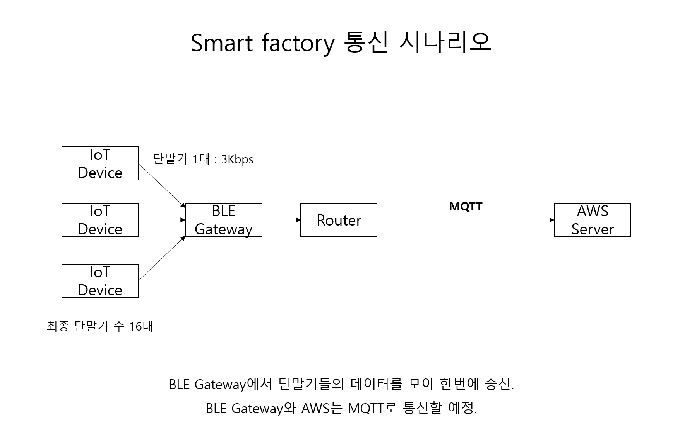
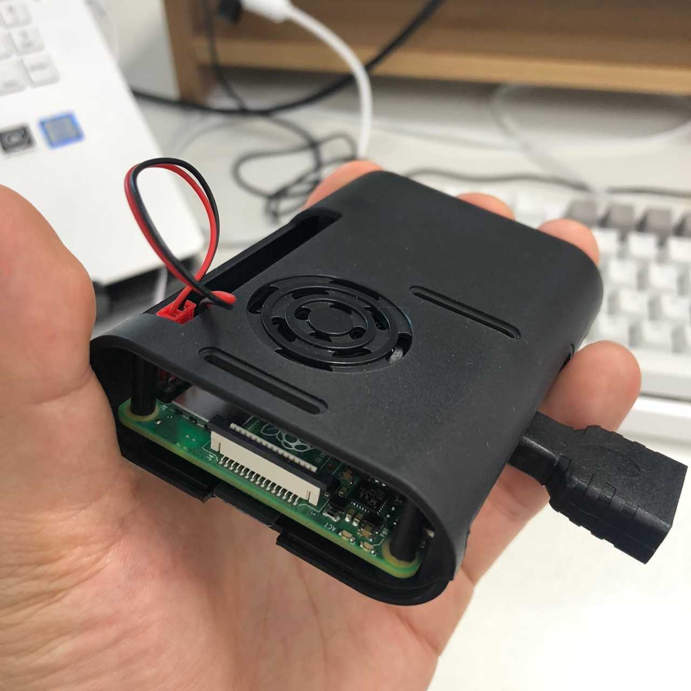

사이트 제작
HTML 레이아웃을 구성했고, 수업시간에 배운 Flex / Grid 을 중심으로 CSS를
작성 했습니다. 미디어 쿼리를 사용 하지 못한게 해당 프로젝트
보안점입니다.
BLE Gateway는 Raspberry를 사용했고, Python에 bleak 라이브러리를 사용하여
BLE를 구현 했습니다. N개의 디바이스를 송수신 해야했기에
Multiprocessing을 이용했습니다. 수신된 데이터는 파싱 후 MQTT 프토토콜로
변환하여 AWS IoTCore에 전송했습니다. AWS IoTCore Query 1차 필터링 후
Lambda에서 2차 필터링 후 DynamoDB에 저장되는 아키텍쳐를 구성했습니다.
IoT 스마트 팩토리는 프론트까지 맡은 첫 프로젝트입니다. 대부분 레이아웃은
flex를 이용했고, 공장 MAP과 마커 표현은 KAKAO Maps API의 커스텀 타일셋
기능을 커스텀했습니다.
Technologies:
- - HTML5&CSS5
- - JavaScript
- - KAKAO Map API
- - jQuery
- - VSCode
- - Git
MQTT Architecture

BLE Gateway test
